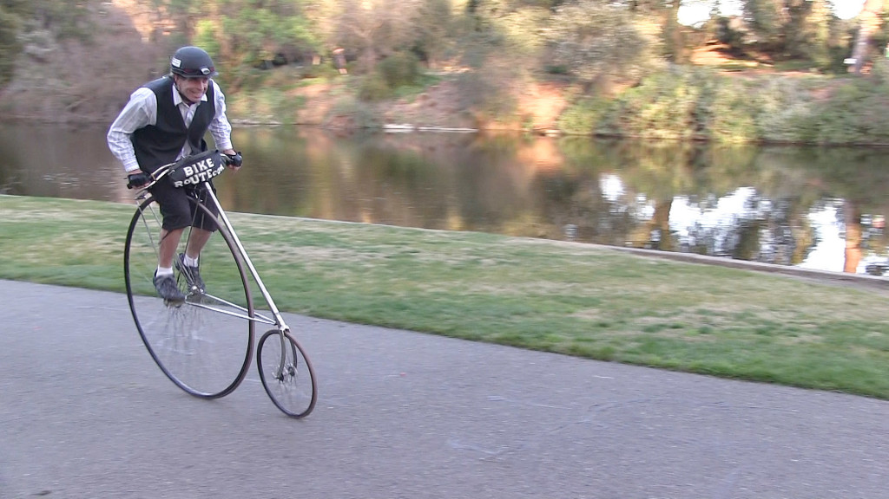

Sinead V Santich
Multimedia Specialist
Resume
Portfolio
About Me
Portfolio
Video
Life Cycles
2016 Davis Feminist Film Festival Trailer
2016 World Food Day Challenge
Photography
The Davis Enterprise
